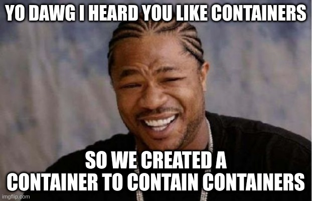

Table of Contents
Prerequisites
You will need to have Kubernetes installed. The easiest way to do with is with minikube. In order to have minikube installed, you'll need to have docker installed. You can technically run minikube in a virtual machine but docker is easiest.
minikube creates a docker container in which we can run… containers.

Overview
Most things in Kubernetes are Kubernetes Objects. Objects are the basic Kubernetes building blocks and they DE-scribe the way you expect your cluster to be. Most deployable objects are configured through spec properties as you'll see shortly.
In this demo, I'm going to spin up a few different types of basic Objects. The main and most efficient way of interacting with interacting with Objects is using the kubectl cli which comes bundled with minikube. The main things we're going to go over and the main things to be done with Objects are:
- Creating Objects (
kubectl create <KUBERNETES_OBJECT>) - Deleting Objects (
kubectl delete <KUBERNETES_OBJECT>) - Applying files (
kubectl apply -f <FILE>.yaml) -.jsonfiles can also be applied. The syntax almost identical to.yamlfiles, only a bit more verbose.- files do not have to be local. You can use http to access files on the internet. kubernetes.io has the following example:
kubectl apply -f https://k8s.io/examples/pods/simple-pod.yaml
Applying a file will either create the object if it doesn't exist or edit the existing object.
There are a few ways to view the Objects that have been created. Namely the commands:
kubectl get <OBJECT_TYPE>kubectl describe <OBJECT_TYPE> <SPECIFIC_OBJECT>kubectl get pod <POD_NAME>for example.
Throughout, I will be using evaluating code blocks on the fly which is essentially equivalent to kubectl apply -f and showing the Kubernetes Objects I've created with a wrapper around kubectl which essentially functions like a kubectl get <OBJECT_NAME>. I will demonstrate the first few by applying them through the command line and running the describe and get commands, but for the most part I will use my wrapper around kubectl.
A list of all kubectl commands can be found here.
The goal of this demonstration will be to walk you through a basic web app with a persistent backend all set up using Kubernetes Objects.
Namespaces
Namespaces are ways of grouping Kubernetes resources. The best way of using namespaces is to think of them as groups of related Objects. A namespace is itself an Object and therefore can be created with the standard kubectl commands or with a file.
# example-namespace.yaml apiVersion: v1 kind: Namespace metadata: name: my-new-namespace labels: name: my-new-namespace
namespace/my-new-namespace created
We will proceed with the default namespace and the kubernetes documentation recommends only using the default namespace unless you're in a large team with many objects that need different resource allocation.
Pods
- consist of containers and resources.
- typically have one container, but can contain many.
Think of them as wrappers around docker containers (though they do not have to be docker specifically) which allows you to interface with them using the kubectl api. Pods are the smallest deployable unit in Kubernetes. A simple example of a pod from the Kubernetes documentation is as follows:
# example-nginx-pod.yaml apiVersion: v1 kind: Pod metadata: name: nginx spec: containers: - name: nginx image: nginx:1.14.2 ports: - containerPort: 80
pod/nginx created
Pods have their own IP addresses and can be accessed through standard protocols (TCP, UDP, SCTP). But pods can be spun up and spun down giving them new IP addresses each time. To avoid this, Kubernetes has a concept known as
Services
A service is a creating a logical set of pods and ways to communicate between them. Given that Pods are spun up and spun down in order to meet the desired state of the application, we need a way of tracking them that doesn't rely on knowledge of the specific IP addresses.
Services need a few properties to function correctly. Firstly, they need a selector. This will tell the service which it's associated with. Second, you will need to specify the port the service is open on and the targetPort the deployment is running the pods on. This is so that the service correctly forwards the request it receives to the right pods.
Additionally, Services act as load balancers and by default direct traffic to the least busy pod of all the replicas.
ConfigMaps
ConfigMaps are key/value stores typically used for configuration data. They're referenced in other Objects by name via configMapKeyRef. As many values as one wnats can be created. We will show a demo of a ConfigMap later.
Secrets
Like ConfigMaps, Secrets are key value stores, but their purpose is so we're not accessing things like passwords and tokens directly inside pods as environmental variables. They're managed by Kubernetes and the values are required to be base64 encoded.
Deployments
Deployments are an abstraction over pods. In practice, what will be used most is deployments. It's unlikely that you would spin up a pod on it's own because Kubernetes manages pods through deployments. In order to know what services the deployment needs to get traffic from, we have to add a matchLabels property to the spec. Deployments also tell us how many replicas of a given pod we need.
MongoDB Setup
ConfigMap
Here, instead of hard-coding an ip address for the pod our deployment will create, we're going to reference the subsequent service that gets created. We will need this in our node application in order to access mongo.
# mongo-config.yaml apiVersion: v1 kind: ConfigMap metadata: name: mongo-config data: mongo-url: mongo-service # to be created
configmap/mongo-config created
Service
This service tells us what port we want to access the service through as well as which port to target and specifies a selector we will use to match in our deployment.
# mongo-config.yaml --- apiVersion: v1 kind: Service metadata: name: mongo-service spec: selector: app: mongo ports: - protocol: TCP port: 27017 targetPort: 27017 # the container port we are targeting when our service gets a request
service/mongo-service created
Secret
First, let's encode the user:
echo -n mongouser | base64
bW9uZ291c2Vy
Then we'll encode the password:
echo -n mongopassword | base64
bW9uZ29wYXNzd29yZA==
After, we can use those values to create our Mongo secret.
# mongo-secret.yaml apiVersion: v1 kind: Secret metadata: name: mongo-secret type: Opaque data: mongo-user: bW9uZ291c2Vy mongo-password: bW9uZ29wYXNzd29yZA==
secret/mongo-secret created
Deployment
In this deployment, we make sure to match up with the mongo service through the matchLabels selector and we configure the environmental variables of our mongo container. This information used therein is referenced from the official mongodb documentation on dockerhub.
# mongo.yaml apiVersion: apps/v1 kind: Deployment metadata: name: mongo-deployment labels: app: mongo spec: replicas: 1 selector: matchLabels: app: mongo # matched from our selector in our service template: metadata: labels: app: mongo spec: containers: - name: mongodb image: mongo:5.0 ports: - containerPort: 27017 # we forward traffic here from our service env: - name: MONGO_INITDB_ROOT_USERNAME valueFrom: secretKeyRef: name: mongo-secret key: mongo-user - name: MONGO_INITDB_ROOT_PASSWORD valueFrom: secretKeyRef: name: mongo-secret key: mongo-password
deployment.apps/mongo-deployment created
Node Application Setup
Service
This service will give us access to our web application through minikube via the minikube ip. We define the nodePort as accessible to the outside. Note that Services of type NodePort have to fall within a very specific range (30000-32767).
# webapp.yaml --- apiVersion: v1 kind: Service metadata: name: webapp-service spec: type: NodePort selector: app: webapp ports: - protocol: TCP port: 3000 targetPort: 3000 nodePort: 30100
service/webapp-service created
Deployment
In this deployment, we make sure to match up with the webapp service through the matchLabels selector and we configure the environmental variables and read the values from our config map and secret.
# webapp.yaml apiVersion: apps/v1 kind: Deployment metadata: name: webapp-deployment labels: app: webapp spec: replicas: 2 selector: matchLabels: app: webapp # matched from our selector in our service template: metadata: labels: app: webapp spec: containers: - name: webapp image: nanajanashia/k8s-demo-app:v1.0 ports: - containerPort: 3000 env: - name: USER_NAME valueFrom: secretKeyRef: name: mongo-secret key: mongo-user - name: USER_PWD valueFrom: secretKeyRef: name: mongo-secret key: mongo-password - name: DB_URL valueFrom: configMapKeyRef: name: mongo-config key: mongo-url
deployment.apps/webapp-deployment created